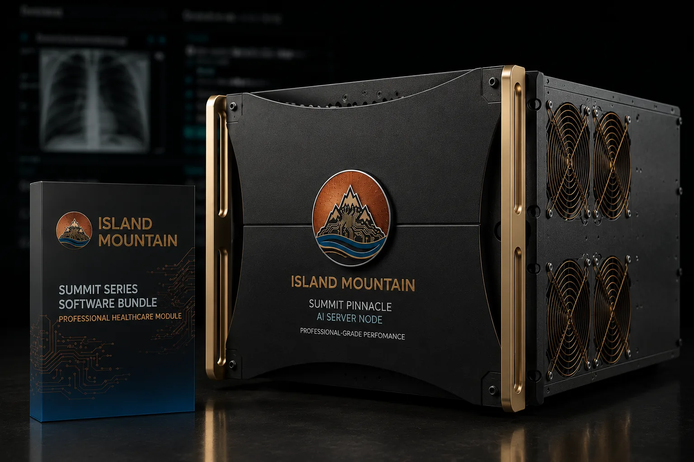

Eleven regulated industries. One structural reality: when compliance frameworks govern your data, the architecture running your AI isn't a vendor decision. It's a compliance posture. Island Mountain builds on-premises inference hardware for organizations that can't afford to get that wrong.
Cloud AI transmits your data to third-party servers. For regulated organizations, that transmission is the compliance risk.
The compliance frameworks differ. HIPAA technical safeguards, ABA Model Rule 1.6, ITAR export controls, OCAP principles, IRB data security protocols. But the structural problem is identical: cloud AI requires transmitting protected data to infrastructure you don't control, operated by a third party whose security posture you can't directly audit, governed by terms of service that reserve the right to change.
On-premises AI eliminates the transmission. Your data stays on your hardware, inside your network perimeter, under your physical and logical security controls. The compliance question shifts from "can we trust this vendor's infrastructure?" to "do we control our own?" That's a question every regulated organization can answer affirmatively.
Island Mountain builds the hardware that makes that answer possible. Pre-configured NVIDIA RTX PRO 6000 Blackwell inference servers, burn-tested, shipped with DeepSeek V4-Flash and Llama 4 Scout pre-installed, running OpenWebUI as the browser-based interface. Air-gap capable across all tiers.
Each industry page details the specific regulatory requirements, how cloud AI creates risk, and how local deployment resolves it.
ABA Model Rule 1.6 requires attorneys to hold client information in confidence. Cloud AI transmits that information to a third party. Local inference eliminates the privilege waiver question entirely.
Key workflows: Contract review, discovery document analysis, brief drafting, deposition preparation, client intake summarization.
Attorney-Client Privilege & AI →HIPAA's technical safeguards under 45 CFR §164.312 require access controls, audit logging, encryption, and transmission security for ePHI. Local AI deployment satisfies every safeguard without a BAA dependency.
Key workflows: Clinical note drafting, prior authorization letters, patient record summarization, coding assistance, referral letter generation.
HIPAA Compliance & AI →OCAP and CARE principles establish that tribal data belongs under tribal jurisdiction. The CLOUD Act allows federal agencies to compel disclosure from U.S. cloud providers regardless of data location. Sovereign infrastructure is the only architecture that honors both frameworks.
Key workflows: Enrollment record management, health data processing, governance document analysis, grant reporting, cultural resource documentation.
Tribal Data Sovereignty & AI →Pre-publication data, IRB-governed records, and grant-funded research carry compliance obligations that cloud AI complicates. 21 CFR Part 11 audit trail requirements and NSF/NIH data management plans demand infrastructure you control.
Key workflows: Literature synthesis, data analysis assistance, manuscript drafting, grant proposal support, clinical trial document review.
Research Data Protection & AI →ITAR prohibits exposing controlled technical data to foreign persons. DFARS 252.204-7012 mandates CUI protection. CMMC Phase 2 enforcement begins November 2026. Cloud AI processing of defense-related data creates structural export control violations.
Key workflows: Technical documentation analysis, proposal drafting, compliance document review, supply chain data processing, after-action report generation.
ITAR & CMMC Compliance →GLBA requires financial institutions to protect non-public personal information. PCI DSS mandates strict controls over cardholder data environments. Cloud AI transmits both to third-party infrastructure. Local deployment keeps NPI on your servers.
Key workflows: Loan document review, KYC/AML analysis, fraud detection, regulatory reporting, customer correspondence, investment analysis.
GLBA Compliance & AI →Insurers process sensitive personal, financial, and health data under HIPAA, NAIC model laws, and state regulations. Cloud AI transmits policyholder information to commercial infrastructure. Local AI keeps claims, underwriting, and fraud analysis on your hardware.
Key workflows: Claims processing, underwriting analysis, fraud detection, policy review, actuarial support, customer correspondence.
Insurance Data Privacy & AI →NERC CIP and IEC 62443 mandate strict cybersecurity for the bulk electric system and industrial control systems. Cloud AI processing of operational technology data creates compliance violations and cybersecurity exposure. Air-gapped local AI eliminates the attack surface.
Key workflows: Predictive maintenance, grid operations documentation, NERC CIP compliance reporting, pipeline monitoring, outage response documentation.
NERC CIP Compliance & AI →Federal, state, and local agencies handle CUI, law enforcement data, and citizen records under FedRAMP, FISMA, and NIST SP 800-171. Cloud AI creates dependency on commercial vendors. On-premises AI restores jurisdictional control over government data.
Key workflows: Document review, FOIA processing, policy analysis, citizen service documentation, grant and budget analysis.
Government Data Sovereignty & AI →FERPA protects student education records. The "school official" exception works best when AI processing is under direct institutional control. Cloud AI introduces third-party data handling that complicates FERPA compliance. Local deployment keeps student data on campus.
Key workflows: Curriculum design, student record summarization, research data analysis, administrative drafting, grant proposals, assessment assistance.
FERPA Compliance & AI →Title 31 of the Bank Secrecy Act classifies casinos as financial institutions. NIGC Minimum Internal Control Standards govern tribal gaming operations. State gaming commissions mandate cybersecurity controls. Cloud AI transmits patron transaction data and compliance intelligence to third-party servers. Local deployment keeps it all on your floor.
Key workflows: SAR drafting, CTR preparation, AML transaction analysis, patron loyalty analytics, revenue forecasting, marketing campaigns, surveillance documentation.
Casino Gaming Compliance & AI →Many organizations operate under multiple compliance regimes simultaneously. A tribal health clinic needs both HIPAA and OCAP protections. A university defense research lab faces both ITAR and IRB requirements. Island Mountain systems are configured for your most restrictive framework, which inherently satisfies less restrictive ones.
Air-gap capable across all tiers for organizations requiring complete network isolation.
Discuss Your Requirements →
Legal Practice

Healthcare

Tribal Government

Education
Multi-GPU inference configuration. 192GB VRAM on Summit Base systems, 384GB on Summit Pinnacle. Enough to run DeepSeek V4-Flash, Llama 4 Scout, and R1 70B Distill or Qwen 3 72B simultaneously.
Browser-based chat interface accessible from any device on your network. Multi-user with granular access controls. No client software installation required.
Every system can operate with zero internet connectivity. Models are pre-installed. Updates are delivered via secure transfer when needed. Complete network isolation for maximalist security postures.
Systems ship ready to deploy. Models loaded, inference engine tuned, interface configured. Rack it, plug it in, open a browser. 30 days of hands-on setup support included.
No per-query pricing. No subscription tiers. No usage-based billing. You own the hardware outright. Section 179 eligible for full first-year depreciation.
Your questions go to the person who assembled and tested your system. No tiered support. No ticket queues. Direct line to the builder for the life of the hardware.
Technical writing on the specific regulatory frameworks that govern AI deployment in each sector.
The structural privilege waiver problem that NDAs cannot fix. ABA Model Rule 1.6, Formal Opinion 477R, and the case for local inference.
The 10-item checklist under 45 CFR §164.312 for healthcare organizations deploying AI on controlled infrastructure.
How the CLOUD Act collides with tribal data sovereignty and why sovereign infrastructure is the only architecture that honors OCAP principles.
Can your AI infrastructure pass an audit? Self-assessment guide for CUI handling, CMMC alignment, and export control compliance.
A risk-based architecture decision framework for regulated pharma, biotech, and clinical research labs deploying AI.
The Heppner ruling, 20 million log entries, and what happens when your cloud AI conversations become discoverable.
Tell us about your regulatory environment and we'll spec the right system. One conversation. No sales pitch.
Or call directly: 1-341-441-8740